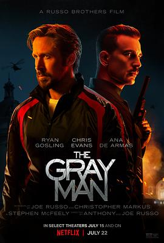

6.6
灰影人
The Gray Man
2022
美国
评分 6.6
导演:
安东尼·罗素 / 乔·罗素 (Anthony Russo / Joe Russo)
演员:
瑞恩·高斯林 / 克里斯·埃文斯 / 安娜·德·阿玛斯 / 杰西卡·亨维克 / 雷吉-让·佩吉 / 比利·鲍伯·松顿
类型:
动作,惊悚
剧情简介
前中情局黑色行动特工科特·金特利绰号“山地六号”（Six），经历了一段隐秘的监狱岁月后被提拔至“灰影人”项目——一个无需身份、不留痕迹的杀手平台。他接到一次在曼谷夜店执行的任务，却在刺杀目标的瞬间，发现自己的情报并非如他所想。一个加密硬盘交到他手中，上面记录的腐败秘密令他瞬间变为通缉对象。当昔日同僚、现已脱离中情局的劳埃德·汉森受命追捕六号时，全球猎杀迅速展开，从曼谷俱乐部到布拉格有轨电车，从克罗地亚别墅到维也纳夜街，枪火、爆炸、密室突袭不断。与此同时，六号身边唯一可信的盟友——中情局女探员丹妮·米兰达，也在这场逃亡中由怀疑转为合作。他们一路穿越暗巷、码头、红灯区与直升机甲板，渐渐揭开背后那条连结权力、贪婪与杀戮的暗黑链接。影片将“无名刺客”与“制度腐败”并置：Six冷静如冰，却因一次选择被迫面对自己是谁，他到底在为谁杀人。导演巧用灰蓝冷色调、快速剪辑的战斗节奏与全球化场景营造压迫感，也在枪林弹雨中留白——一个人留在暗处看世界，却无法回到最初的自己。